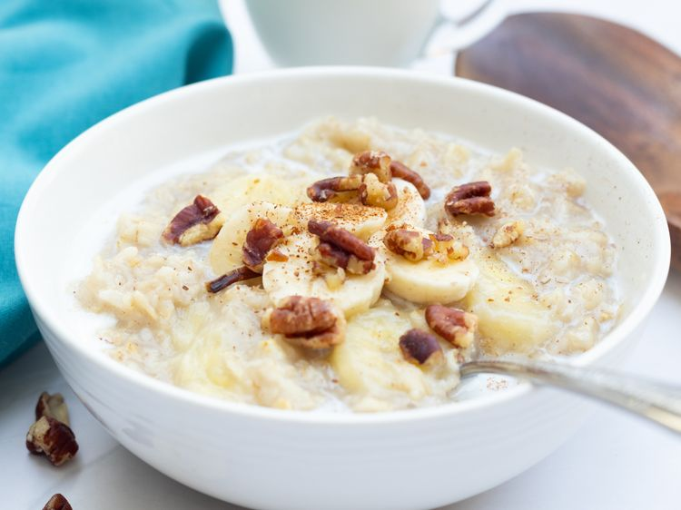

Gather all ingredients.
Combine water and oats in a saucepan;
season to taste with sugar and salt. Add bananas and cinnamon.
Bring to a boil over medium-high heat. Reduce heat to low and cook
Pour into bowls, and top each with a splash of cold milk.